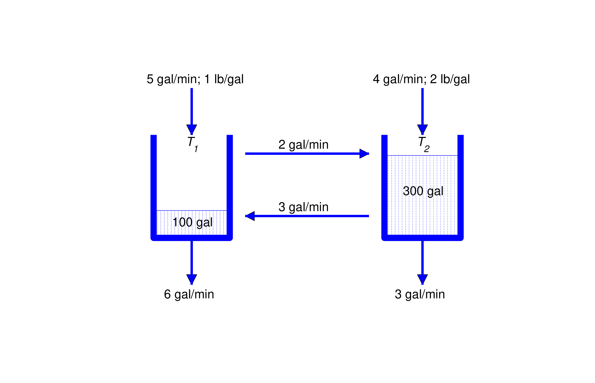
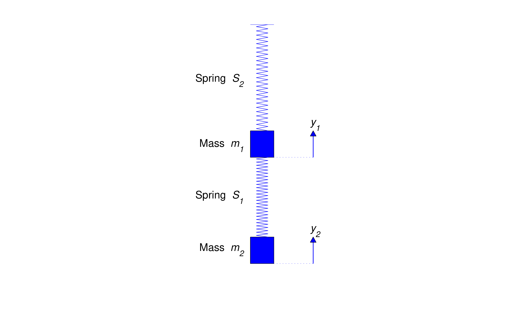
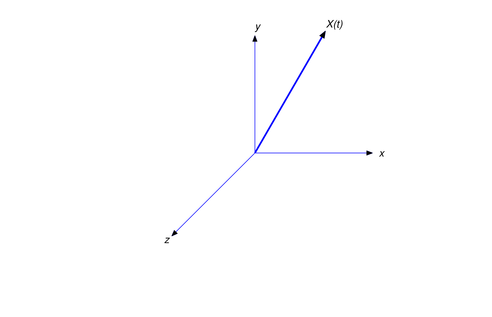

Section 10.1 Introduction to Systems of Differential Equations
10.1 INTRODUCTION TO SYSTEMS OF
DIFFERENTIAL EQUATIONS
Many physical situations are modelled by systems of \(n\) differential equations in \(n\) unknown
functions,
where \(n\ge 2\). The next three examples illustrate physical problems that lead to systems of differential
equations. In these examples and throughout this chapter we’ll denote the independent variable by
\(t\).
Example 10.1.1 Tanks \(T_1\) and \(T_2\) contain 100
gallons and 300 gallons of salt solutions, respectively. Salt
solutions are simultaneously added to both tanks from external sources, pumped from each tank to the
other, and drained from both tanks (Figure 10.1.1). A solution
with \(1\) pound of salt per gallon is pumped
into \(T_1\) from an external source at \(5\) gal/min, and a solution with \(2\) pounds of salt per gallon is
pumped into
\(T_2\) from an external source at \(4\) gal/min. The solution from \(T_1\) is pumped into \(T_2\) at 2 gal/min,
and the solution
from \(T_2\) is pumped into \(T_1\) at \(3\) gal/min. \(T_1\) is drained at \(6\) gal/min and \(T_2\) is drained
at 3 gal/min. Let \(Q_1(t)\) and \(Q_2(t)\) be the
number of pounds of salt in \(T_1\) and \(T_2\), respectively, at time \(t>0\). Derive a system of differential
equations for \(Q_1\) and
\(Q_2\). Assume that both mixtures are well stirred.

Figure 10.1.1
Solution As in Section 4.2, let rate
in and rate out denote the rates (lb/min) at which salt enters and leaves a
tank; thus,
Note that the volumes of the solutions in \(T_1\) and \(T_2\) remain constant at 100 gallons and
300 gallons,
respectively.
\(T_1\) receives salt from the external source at the rate of
\[ \mbox {(1 lb/gal) }\times \mbox { (5~gal/min)}=\mbox { 5 lb/min}\]
and from \(T_2\) at the rate of
\[ \mbox {(lb/gal in }T_2)\times \mbox { (3~gal/min) }={1\over 300}Q_2\times 3\\={1\over 100}Q_2 \mbox { lb/min}\]
Therefore \begin {equation} \label {eq:10.1.1} \mbox {(rate in)}_1= 5+{1\over 100}Q_2\end {equation} Solution leaves \(T_1\) at the rate of 8 gal/min, since 6 gal/min are drained and 2 gal/min are
pumped to \(T_2\);
hence, \begin {equation} \label {eq:10.1.2} (\mbox {rate out})_1=(\mbox { lb/gal in T}_1)\times \mbox {(8~gal/min) }
={1\over 100}Q_1\times 8={2\over 25}Q_1\end {equation} Eqns. (10.1.1) and (10.1.2) imply that \begin {equation} \label {eq:10.1.3}
Q_1'=5+{1\over 100}Q_2-{2\over 25}Q_1\end {equation}
\(T_2\) receives salt from the external source at the rate of
\[ \mbox {(2 lb/gal) }\times \mbox { (4~gal/min)}=\mbox { 8 lb/min}\]
and from \(T_1\) at the rate of
\[ \mbox {(lb/gal in }T_1)\times \mbox { (2~gal/min) }={1\over 100}Q_1\times 2\\={1\over 50}Q_1 \mbox { lb/min}\]
Therefore \begin {equation} \label {eq:10.1.4} \mbox {(rate in)}_2= 8+{1\over 50}Q_1\end {equation} Solution leaves \(T_2\) at the rate of \(6\) gal/min, since \(3\) gal/min are drained and
\(3\) gal/min are pumped to \(T_1\);
hence, \begin {equation} \label {eq:10.1.5} (\mbox {rate out})_2=(\mbox { lb/gal in T}_2)\times \mbox {(6~gal/min) }
={1\over 300}Q_2\times 6={1\over 50}Q_2\end {equation} Eqns. (10.1.4) and (10.1.5) imply that \begin {equation} \label {eq:10.1.6}
Q_2'=8+{1\over 50}Q_1-{1\over 50}Q_2\end {equation}
We say that (10.1.3) and (10.1.6) form a system of two first order
equations in two unknowns, and write them
together as
Example 10.1.2 A mass \(m_1\) is suspended from a
rigid support on a spring \(S_1\) and a second mass \(m_2\) is suspended
from the first on a spring \(S_2\) (Figure 10.1.2). The
springs obey Hooke’s law, with spring constants \(k_1\) and \(k_2\).
Internal friction causes the springs to exert damping forces proportional to the rates of change of their
lengths, with damping constants \(c_1\) and \(c_2\). Let \(y_1=y_1(t)\) and \(y_2=y_2(t)\) be the displacements of
the two masses from their
equilibrium positions at time \(t\), measured positive upward. Derive a system of differential equations for
\(y_1\)
and \(y_2\), assuming that the masses of the springs are negligible and that vertical external forces \(F_1\) and
\(F_2\) also act
on the objects.
Solution In equilibrium, \(S_1\) supports both \(m_1\) and \(m_2\)
and \(S_2\) supports only \(m_2\). Therefore, if \(\Delta \ell _1\) and \(\Delta \ell _2\) are the elongations of
the
springs in equilibrium then \begin {equation} \label {eq:10.1.7} (m_1+m_2)g=k_1\Delta \ell _1\quad \mbox { and
}\quad m_2g=k_2\Delta \ell _2\end {equation}

Figure 10.1.2
Let \(H_1\) be the Hooke’s law force acting on \(m_1\), and let \(D_1\) be the damping force on
\(m_1\). Similarly, let \(H_2\) and \(D_2\) be the Hooke’s
law and damping forces acting on \(m_2\). According to Newton’s second law of motion, \begin {equation} \label
{eq:10.1.8} \begin {array}{ccl} m_1y_1''=-m_1g+H_1+D_1+F_1,\\ m_2y_2''=-m_2g+H_2+D_2+F_2\end {array} \end
{equation} When the displacements
are \(y_1\) and \(y_2\), the change in length of \(S_1\) is \(-y_1+\Delta \ell _1\) and the change in length of
\(S_2\) is \(-y_2+y_1+\Delta \ell _2\). Both springs exert Hooke’s
law forces on \(m_1\), while only \(S_2\) exerts a Hooke’s law force on \(m_2\). These forces are in directions that
tend
to restore the springs to their natural lengths. Therefore \begin {equation} \label {eq:10.1.9} H_1=k_1(-y_1+\Delta
\ell _1)-k_2(-y_2+y_1+\Delta \ell _2)\quad \mbox { and }\quad H_2=k_2(-y_2+y_1+\Delta \ell _2)\end {equation} When the velocities are \(y_1'\) and \(y_2'\), \(S_1\) and \(S_2\) are
changing length at the rates \(-y_1'\) and \(-y_2'+y_1'\), respectively. Both springs exert damping forces on
\(m_1\), while only \(S_2\)
exerts a damping force on \(m_2\). Since the force due to damping exerted by a spring is proportional to the
rate of change of length of the spring and in a direction that opposes the change, it follows that
\begin {equation} \label {eq:10.1.10} D_1=-c_1y_1'+c_2(y_2'-y_1')\quad \mbox { and }\quad D_2=-c_2(y_2'-y_1')\end
{equation}
From (10.1.8), (10.1.9), and (10.1.10), \begin {equation} \label {eq:10.1.11} \begin
{array}{ccl} m_1y_1''&=&-m_1g+k_1(-y_1+\Delta \ell _1)-k_2(-y_2+y_1+\Delta \ell _2)\\ &\mbox
{}&-c_1y_1'+c_2(y_2'-y_1')+F_1\\ &=&-(m_1g-k_1\Delta \ell _1+k_2\Delta \ell _2)-k_1y_1+k_2(y_2-y_1)\\
&\mbox {}&-c_1y_1'+c_2(y_2'-y_1')+F_1 \end {array} \end {equation} and \begin
{equation} \label {eq:10.1.12} \begin {array}{ccl} m_2y_2''&=&-m_2g+k_2(-y_2+y_1+\Delta \ell
_2)-c_2(y_2'-y_1')+F_2\\ &=&-(m_2g-k_2\Delta \ell _2)-k_2(y_2-y_1)-c_2(y_2'-y_1')+F_2\end {array} \end
{equation} From (10.1.7),
\[ m_1g-k_1\Delta \ell _1+k_2\Delta \ell _2=-m_2g+k_2\Delta \ell _2=0\]
Therefore we can rewrite (10.1.11) and (10.1.12) as
Example 10.1.3 Let \({\bf X}={\bf X}(t)=x(t)\,{\bf
i}+y(t)\,{\bf j}+z(t)\,{\bf k}\) be the position vector at time \(t\) of an object with mass \(m\), relative to a
rectangular coordinate
system with origin at Earth’s center (Figure 10.1.3).
According to Newton’s law of gravitation, Earth’s
gravitational force \({\bf F}={\bf F}(x,y,z)\) on the object is inversely proportional to the square of the
distance of the object from Earth’s
center, and directed toward the center; thus, \begin {equation} \label {eq:10.1.13} {\bf F}={K\over \|{\bf
X}\|^2}\left (-{{\bf X} \over \|{\bf X}\|}\right )=-K{x\,{\bf i}+y\,{\bf j}+z\,{\bf k}\over \mbox {}\left
(x^2+y^2+z^2\right )^{3/2}}\end {equation} where \(K\) is a constant. To determine \(K\), we
observe that the magnitude of
\(\bf F\) is
\[ \|{\bf F}\|=K{\|{\bf X}\|\over \|{\bf X}\|^3}={K\over \|{\bf X}\|^2} ={K\over (x^2+y^2+z^2)}\]
Let \(R\) be Earth’s radius. Since \(\|{\bf F}\|=mg\) when the object is at Earth’s surface,
\[ mg = {K\over R^2},\quad \mbox { so }\quad K=mgR^2\]
Therefore we can rewrite (10.1.13) as
\[ {\bf F}=-mgR^2{x\,{\bf i}+y\,{\bf j}+z\,{\bf k}\over \mbox {}\left (x^2+y^2+z^2\right )^{3/2}}\]
Now suppose \(\bf F\) is the only force acting on the object. According to Newton’s second law of motion, \({\bf
F}=m{\bf X}''\); that
is,
\[ m(x''\,{\bf i}+y''\,{\bf j}+z''\,{\bf k})= -mgR^2{x\,{\bf i}+y\,{\bf j}+z\,{\bf k}\over \left
(x^2+y^2+z^2\right )^{3/2}}\]
Cancelling the common factor \(m\) and equating components on the two sides of this equation yields the system
\begin {equation} \label {eq:10.1.14} \begin {array}{rcl} x''&=&-\displaystyle {gR^2x\over
(x^2+y^2+z^2)^{3/2}}\\ y''&=&-\displaystyle {gR^2y\over (x^2+y^2+z^2)^{3/2}}\\
z''&=&-\displaystyle {gR^2z\over (x^2+y^2+z^2)^{3/2}}\end {array} \end {equation}

Figure 10.1.3
Rewriting Higher Order Systems as First Order Systems
A system of the form \begin {equation} \label {eq:10.1.15} \begin {array}{ccl}
y_1'&=&g_1(t,y_1,y_2,\dots ,y_n)\\ y_2'&=&g_2(t,y_1,y_2,\dots ,y_n)\\ &\vdots &\\
y_n'&=&g_n(t,y_1,y_2,\dots ,y_n) \end {array} \end {equation} is called a first order system, since the only derivatives occurring in it are first derivatives.
The derivative of each of the unknowns may depend upon the independent variable and all the unknowns, but not
on the derivatives of other unknowns. When we wish to emphasize the number of unknown functions in (10.1.15)
we will say that (10.1.15) is an \(n\times n\) system.
Systems involving higher order derivatives can often be reformulated as first order systems by
introducing
additional unknowns. The next two examples illustrate this.
Example 10.1.4 Rewrite the system \begin {equation}
\label {eq:10.1.16} \begin {array}{rcl} m_1y_1''&=&-(c_1+c_2)y_1'+c_2y_2'-(k_1+k_2)y_1+k_2y_2+F_1\\
m_2y_2''&=&c_2y_1'-c_2y_2'+k_2y_1-k_2y_2+F_2\end {array} \end {equation} derived in
Example 10.1.2 as a system of first order equations.
Solution If we define \(v_1=y_1'\) and \(v_2=y_2'\), then
\(v_1'=y_1''\) and \(v_2'=y_2''\), so (10.1.16) becomes
\[ \begin {array}{rcl} m_1v_1'&=&-(c_1+c_2)v_1+c_2v_2-(k_1+k_2)y_1+k_2y_2+F_1\\
m_2v_2'&=&c_2v_1-c_2v_2+k_2y_1-k_2y_2+F_2\end {array} \]
Therefore \(\{y_1,y_2,v_1,v_2\}\) satisfies the \(4\times 4\) first order system \begin {equation} \label
{eq:10.1.17} \begin {array}{rcl} y_1'&=&v_1\\ y_2'&=&v_2\\ v_1'&=&\displaystyle {1\over
m_1}\left [-(c_1+c_2)v_1+c_2v_2-(k_1+k_2)y_1+k_2y_2+F_1\right ]\\ v_2'&=&\displaystyle {1\over m_2}\left
[c_2v_1-c_2v_2+k_2y_1-k_2y_2+F_2\right ]\end {array} \end {equation}
REMARK: The difference in form
between (10.1.15) and (10.1.17), due to the way in which the unknowns are
denoted in the two systems, isn’t important; (10.1.17) is a first order system, in that each equation in
(10.1.17)
expresses the first derivative of one of the unknown functions in a way that does not involve derivatives of any of
the other unknowns.
Example 10.1.5 Rewrite the system
\[ \begin {array}{ccc} x''&=&f(t,x,x',y,y',y'')\\y'''&=&g(t,x,x',y,y'y'') \end {array} \]
as a first order system.
Solution We regard \(x\), \(x'\), \(y\), \(y'\), and \(y''\) as
unknown functions, and rename them
\[ x=x_1,\; x'=x_2,\quad y=y_1,\quad y'=y_2,\quad y''=y_3\]
These unknowns satisfy the system
\[ \begin {array}{ccl} x_1'&=&x_2\\x_2'&=&f(t,x_1,x_2,y_1,y_2,y_3)
\\y_1'&=&y_2\\y_2'&=&y_3\\ y_3'&=&g(t,x_1,x_2,y_1,y_2,y_3).\end {array} \]
Rewriting Scalar Differential Equations as Systems
In this chapter we’ll refer to differential equations involving only one unknown function as scalar differential
equations. Scalar differential equations can be rewritten as systems of first order equations by the method
illustrated in the next two examples.
Example 10.1.6 Rewrite the equation \begin {equation}
\label {eq:10.1.18} y^{(4)}+4y'''+6y''+4y'+y=0 \end {equation} as a \(4\times 4\) first order
system.
Solution We regard \(y\), \(y'\), \(y''\), and \(y'''\) as unknowns
and rename them
\[ y=y_1,\quad y'=y_2,\quad y''=y_3,\quad \mbox{ and } \quad y'''=y_4\]
Then \(y^{(4)}=y_4'\), so (10.1.18) can be written as
\[ y_4'+4y_4+6y_3+4y_2+y_1=0\]
Therefore \(\{y_1,y_2,y_3,y_4\}\) satisfies the system
Example 10.1.7 Rewrite
\[ x'''=f(t,x,x',x'') \]
as a system of first order equations.
Solution We regard \(x\), \(x'\), and \(x''\) as unknowns and rename
them
\[ x=y_1, \quad x'=y_2,\quad \mbox{ and } \quad x''=y_3\]
Then
\[ y_1'=x'=y_2,\quad y_2'=x''=y_3,\quad \mbox{ and } \quad y_3'=x'''\]
Therefore \(\{y_1,y_2,y_3\}\) satisfies the first order system
\[ \begin {array}{ccl} y_1'&=&y_2\\y_2'&=&y_3\\y_3'&=&f(t,y_1,y_2,y_3)\end {array} \]
Since systems of differential equations involving higher derivatives can be rewritten as first
order systems by
the method used in Examples 10.1.5 –10.1.7 , we’ll consider only first order systems.
Numerical Solution of Systems
The numerical methods that we studied in Chapter 3 can be extended to systems, and most
differential equation
software packages include programs to solve systems of equations. We won’t go into detail on numerical methods
for systems; however, for illustrative purposes we’ll describe the Runge-Kutta method for the numerical solution
of the initial value problem
at equally spaced points \(t_0\), \(t_1\), …, \(t_n=b\) in an interval \([t_0,b]\). Thus,
\[ t_i=t_0+ih,\quad i=0,1,\dots ,n\]
where
\[ h={b-t_0\over n}\]
We’ll denote the approximate values of \(y_1\) and \(y_2\) at these points by \(y_{10},y_{11},\dots ,y_{1n}\) and
\(y_{20},y_{21},\dots ,y_{2n}\). The Runge-Kutta method computes these
approximate values as follows: given \(y_{1i}\) and \(y_{2i}\), compute
for \(i=0\), …, \(n-1\). Under appropriate conditions on \(g_1\) and \(g_2\), it can be shown that
the global truncation error for the
Runge-Kutta method is \(O(h^4)\), as in the scalar case considered in Section 3.3.